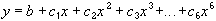

Используется для аппроксимации данных по методу наименьших квадратов в соответствии с уравнением:
у = b + mx
где m - угол наклона и b - координата пересечения оси абсцисс.
Используется для аппроксимации данных по методу наименьших квадратов в соответствии с уравнением:

где b и C1...C6 — константы.
Используется для аппроксимации данных по методу наименьших квадратов в соответствии с уравнением:
y = c ln(x) + b
где c и b - константы, ln - функция натурального логарифма.